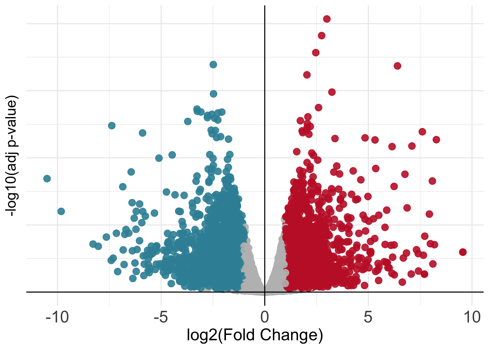

# Perform differential expression testing given the design formula we wrote previously
dds <- DESeq(dds)Day 3
Objectives
- Learn about the theory behind differential expression analysis
- Perform differential expression analysis using
DESeq2 - Visualize the results
- Perform further downstream analysis on interesting gene groups
Differential Expression Analysis
The main purpose of the steps we performed above is to get to this point with a fair knowledge of the data at hand, all the steps have to be repeated each time one starts with some fresh new data (no data is the same!!). Now we can start performing differential expression analysis with the DESeq2 package. The main concept behind it is to contrast two categories of our interest in the data (i.e. CD8+ Tex vs CD8+ Teff) and check which genes are predominantly (defined in a statistical sense) expressed in one category as opposed to the other. As introduced previously, we tell DESeq2 which comparisons to perform through the design formula we specified above when we created our DESeqDataSet object dds. With that design formula we told it we are interested in checking for the gene expression differences happening between the categories present in the SampleGroup column of our samples table. These categories are exactly the ones we have been plotting all along up to this point (the different CD8+ T-cell types).
💡 Given that we have four differences categories (these are also called
levelsinR) in ourSampleGroupcolumn (which can also be called afactorinR),DESeq2could perform different comparisons since these are pairwise. We will see a way to set up the analysis only for our comparison of interest!
The DESeq() Function
Let’s perform differential expression analysis with DESeq2 on our dataset using the main function for the task in the package, DESeq().
Note how we did not use the transformed version of the dataset (rld) but we started from the object dds. As previously mentioned, the package needs to start from raw count data to correctly assess differences in gene expression.
Performing Pairwise Comparisons
After having used the main DESeq() function, we can actively explore the results of the analysis for the comparisons of our interest by using the results function and specifying the contrast argument. Let’s say that we are very interested in the differences occurring between CD8+ Teff and CD8+ Tex cells. For example we might want to check if any gene is up-regulated during the process of CD8+ T-cell With the alpha parameter we can determine the adjusted P-value threshold used to accept or reject the null hypothesis (\(H_{0}\)) of a gene NOT being differentially expressed between the two conditions.
# Specify conditions to compare
conds <- c("Ttumor","Teff")
# Perform comparison of interest, in this case we specify the column of interest (SampleGroup) and the two categories we want to compare (Tex, Teff)
res <- results(dds, contrast=c("SampleGroup",conds[1],conds[2]), alpha=0.05)
# Check out results object
reslog2 fold change (MLE): SampleGroup Ttumor vs Teff
Wald test p-value: SampleGroup Ttumor vs Teff
DataFrame with 62854 rows and 6 columns
baseMean log2FoldChange lfcSE stat pvalue
<numeric> <numeric> <numeric> <numeric> <numeric>
ENSG00000228572 0 NA NA NA NA
ENSG00000182378 0 NA NA NA NA
ENSG00000226179 0 NA NA NA NA
ENSG00000281849 0 NA NA NA NA
ENSG00000280767 0 NA NA NA NA
... ... ... ... ... ...
ENSG00000278457 0.95921 0.544214 1.633402 0.333178 0.739000
ENSG00000278294 0.00000 NA NA NA NA
ENSG00000278384 55.69841 0.448235 0.289744 1.547000 0.121863
ENSG00000278625 0.00000 NA NA NA NA
ENSG00000278704 2.19671 -0.312679 1.315100 -0.237760 0.812067
padj
<numeric>
ENSG00000228572 NA
ENSG00000182378 NA
ENSG00000226179 NA
ENSG00000281849 NA
ENSG00000280767 NA
... ...
ENSG00000278457 NA
ENSG00000278294 NA
ENSG00000278384 0.191400
ENSG00000278625 NA
ENSG00000278704 0.864462We can see that the results of our analysis are stored inside a table which we assigned to the variable res. We can additionally print out a summary of the results of the differential analysis results by using the following code:
summary(res)
out of 42562 with nonzero total read count
adjusted p-value < 0.05
LFC > 0 (up) : 7236, 17%
LFC < 0 (down) : 7414, 17%
outliers [1] : 0, 0%
low counts [2] : 14481, 34%
(mean count < 1)
[1] see 'cooksCutoff' argument of ?results
[2] see 'independentFiltering' argument of ?resultsIn here we can see the type of comparison we are performing, the P-value threshold we used and the number of up-regulated and down-regulated genes at a log-fold change of 1, which corresponds to a difference in raw gene expression value of 2 times since the log has a base of 2. So, to recap, all of the genes with log-fold change of 1 or more are twice as expressed in one condition compared to the other.
In the code below, we will create two new tables with the genes that were up-regulated and down-regulated in the comparison we performed, we will use these later.
# Extract the information related to up-regulated and down-regulated genes
up_df <- res %>% as.data.frame() %>% filter(padj < 0.05 & log2FoldChange > 1)
down_df <- res %>% as.data.frame() %>% filter(padj < 0.05 & log2FoldChange < -1)If we check the table with the up-regulated genes we can see it has the following structure (we just took some specific rows - genes - of the complete results table corresponding to up-regulated genes):
head(up_df, 4) baseMean log2FoldChange lfcSE stat pvalue
ENSG00000286431 37.73706 1.472315 0.4612655 3.191903 1.413390e-03
ENSG00000005302 4883.56076 1.155996 0.1213668 9.524813 1.653388e-21
ENSG00000176896 290.20191 1.680612 0.1994530 8.426108 3.573522e-17
ENSG00000224975 83.75517 1.120562 0.2100045 5.335894 9.507474e-08
padj
ENSG00000286431 3.574656e-03
ENSG00000005302 2.955365e-20
ENSG00000176896 4.351608e-16
ENSG00000224975 4.451140e-07💡 How would you check if the dimensions of the tables we extracted correspond to the number of differentially expressed genes present in the summary we printed above?
Visualizing Results With Volcano Plots
Once we have our results from the comparison, we might want to present them graphically to aid their interpretation by other people or to emphasize messages of interest within them (like the statistics only for some genes of interest). One way to visualize results from a differential expression analysis is to draw a volcano plot. The goal of a volcano plot is to display and summarize the main metrics of output from a differential expression analysis, these consist of P-values and log-fold changes associated with each gene in the dataset for the specific comparison we are performing. These two variables can be plotted together to get a feel for the overall results in the analysis. Let’s plot a volcano summarizing the results of the comparison we have performed.
library(ggrepel)
log2FC_val = 1
padj_val = 0.05
volcano_corr = as.data.frame(res) %>% mutate(names=rownames(res)) %>% drop_na()
volcano_corr$threshold=ifelse(volcano_corr$log2FoldChange >= log2FC_val & volcano_corr$padj < padj_val,"A",
ifelse(volcano_corr$log2FoldChange <= -log2FC_val & volcano_corr$padj < padj_val, "B","C"))
ggplot(volcano_corr, aes(x=log2FoldChange, y =-log10(padj), color=threshold)) +
geom_point(alpha=0.9, size=3) +
scale_color_manual(values=c( "B"="#3891A6","A"="#C52233", "C"="grey")) +
#scale_color_manual(values=c( "mark"="black", "leave"="white")) +
xlab("log2(Fold Change)") + ylab("-log10(adj p-value)") +
theme_minimal() +
geom_vline(xintercept=0, color='black') +
geom_hline(yintercept=0, color='black') +
theme(legend.position="none", axis.title.x = element_text(size = 17),
axis.text.y=element_text(size = 0),
axis.text.x=element_text(size = 17),
axis.title.y = element_text(size = 15)) 
Mapping IDs to Gene Symbols
The volcano plot above is nice but it is not so informative since we cannot see any gene name! Unfortunately we do not have recognizable gene names in the res object, as we can see below:
# In this case gene names are the names of the rows of our table
rownames(res)[1:20] [1] "ENSG00000228572" "ENSG00000182378" "ENSG00000226179" "ENSG00000281849"
[5] "ENSG00000280767" "ENSG00000185960" "LRG_710" "ENSG00000237531"
[9] "ENSG00000198223" "ENSG00000265658" "ENSG00000185291" "ENSG00000236871"
[13] "ENSG00000236017" "ENSG00000197976" "ENSG00000196433" "ENSG00000289620"
[17] "ENSG00000223511" "ENSG00000234622" "ENSG00000277120" "ENSG00000223773"We can see that we currently have Ensembl Gene IDs as opposed to gene symbols! We can fix this by converting between the two, this can be achieved in R through dedicated packages like org.Hs.eg.db which map between the two types of gene identifiers. Let’s do it using the code below.
# Use the package for the conversion between Ensembl IDs and Gene Symbols
library(org.Hs.eg.db)
volcano_corr$gene_names <- mapIds(org.Hs.eg.db, keys=row.names(volcano_corr), column="SYMBOL", keytype="ENSEMBL", multiVals="first")We can now check that we have new mapped gene symbols that we can use to make our volcano plot informative!
volcano_corr$gene_names[1:40] [1] NA "RPS27AP20" NA NA "STS"
[6] NA "TBL1X" "WWC3" "CLCN4" "HCCS"
[11] "MSL3" "FRMPD4" "PRPS2" NA "TLR7"
[16] "TMSB4X" NA NA "GS1-600G8.3" NA
[21] "LINC01203" "EGFL6" "TCEANC" "RAB9A" "OFD1"
[26] NA NA "MOSPD2" "CA5BP1" "CA5B"
[31] "ZRSR2" NA "GRPR" "SYAP1" "TXLNG"
[36] "REPS2" NA "NHS" "SCML1" NA And finally we can try to plot again our volcano with the addition of gene names!
volcano_corr <- volcano_corr[order(volcano_corr$padj, decreasing = FALSE),] %>% drop_na()
names_list <- c(volcano_corr$gene_names[1:10], "TOX", "ENTPD1", "HAVCR2")
neg_fc <- volcano_corr[order(volcano_corr$log2FoldChange, decreasing = TRUE),] %>% filter(padj < 0.05 ) %>% .$gene_names %>% head(10) # Change these numbers to avoid overcrowding in the plot
pos_fc <- volcano_corr[order(volcano_corr$log2FoldChange, decreasing = FALSE),] %>% filter(padj < 0.05) %>% .$gene_names %>% head(10)
names_list <- c(names_list, neg_fc, pos_fc)
volcano_corr <- volcano_corr %>% mutate(., stroke = ifelse(.$gene_names %in% names_list & volcano_corr$padj < padj_val & volcano_corr$log2FoldChange > log2FC_val, 2, 0),
names=ifelse(.$gene_names %in% names_list,'mark','leave')) %>%
.[order(.$names),]
ggplot(volcano_corr, aes(x=log2FoldChange, y =-log10(padj), color=threshold)) +
geom_point(alpha=0.9, size=3) +
scale_color_manual(values=c( "B"="#3891A6","A"="#C52233", "C"="grey")) +
xlab("log2(Fold Change)") + ylab("-log10(adj p-value)") +
theme_minimal() +
geom_vline(xintercept=0, color='black') +
geom_hline(yintercept=0, color='black') +
theme(legend.position="none", axis.title.x = element_text(size = 17),
axis.text.y=element_text(size = 0),
axis.text.x=element_text(size = 17),
axis.title.y = element_text(size = 15)) +
geom_label_repel(data=volcano_corr[which(volcano_corr$names=='mark' & volcano_corr$threshold=='A'),], aes(label=gene_names), max.overlaps = 30, color='black', size=4, fill='white', fontface='italic') +
geom_label_repel(data=volcano_corr[which(volcano_corr$names=='mark' & volcano_corr$threshold=='B'),], aes(label=gene_names), max.overlaps = 30, color='black', size=4, fill='white', fontface='italic')
Visualizing Results With Heatmaps
We can also plot differentially expressed genes in the two conditions of our interest using heatmaps. In this case we select genes based on their significance and visualize how their expression values change across samples just like we have done earlier.
# Take genes
diffs <- rbind(volcano_corr[volcano_corr$threshold == "A",], volcano_corr[volcano_corr$threshold == "B",])$gene_names
# Extract counts from `dds` object
mtx <- counts(dds, normalized=TRUE)[,rownames(samples[which(samples$SampleGroup %in% conds),])]
# Subset for differential genes
ids <- rownames(volcano_corr[which(volcano_corr$gene_names %in% diffs),])
# Subset matrix for genes of interest
mtx <- mtx[ids,]
# Create another table for annotating the heatmap with colors
df <- as.data.frame(colData(dds)[,c("Donor","SampleGroup")])
# Plot with pheatmap
pheatmap(mtx, cluster_rows=TRUE, show_rownames=FALSE,
cluster_cols=TRUE, annotation_col=df[which(rownames(df) %in% colnames(mtx)),], scale = "row")
Given that the number of differentially expressed genes can sometimes be very high, we cannot pretend to explore them manually one by one understanding their function! As we will see, there are further downstream analyses we can perform to get a sense of trends and pathways activated in the cell type of our interest. These analyses which look at genes in groups or ontologies try to match conditions with functions, to better elucidate what is going on inside cells in a specific condition.
Further Downstream Analyses
Once we have our differentially expressed genes, we can perform various downstream analyses to check the functional aspects of the group of genes which are up- or down-regulated in our condition of interest. In the following sections, we will go through two of these, Gene Set Enrichment Analysis (GSEA) and Gene Ontology Enrichment Analysis (GO).
GSEA
Gene Set Enrichment Analaysis was first published in 2005 as a method to interpret genome-wide expression profiles from RNA-seq data using sets of genes with known biological functions. In this sense, GSEA is used to check at which level a signature of genes is enriched in an expression profile. We can graphically summarize the steps in GSEA using the following picture, from the original publication.

GSEA needs two ingredients, a ranked gene list from our analysis (for instance genes ordered by log-fold change) and a list of genes with biological relevance (for instance genes known to regulate CD8+ T-cell exhaustion).
1. We start by taking our list of up- or down- regulated genes and order them based on the value of the fold-change so that our list will have genes that change a lot at the top and ones with little change at the bottom. This will represent our ranking.
2. We then take one or more curated and archived gene sets which are related to a biological function we might be interested in investigating in our dataset.
3. Finally we go through our ranking from top to bottom counting the number of times we see a gene which is also in the gene set that we are looking at. We expect to see genes from a given gene set appear at the top of our ranking if that biological function is particularly important in the genes of our ranking.
Over the years, a collection of curated gene sets called MSigDB has been expanded and is now a great resource to check which ones are more or less enriched in our data at hand.
The web interface for the MSigDB gene set database
In our specific use case, we are going to run GSEA on the set of up-regulated genes in CD8+ Tex cells to check if a gene set of exhaustion is indeed enriched in the genes we have found up-regulated. For this task we are going to use the fgsea package. In order to extract the gene set without the need to directly download it, we are going to access MSigDB directly from R using another package called msigdbr.
In the following chunk, we use a function from the msigdbr package to extract the gene set of our interest:
library(msigdbr)
# Extract the gene sets from the MSigDB database
immune_gsets <- msigdbr(species = "human", category = "C7", subcategory = "IMMUNESIGDB")Let’s see what’s in the immune_gsets object:
# Take a look at what we fetched from the database
head(immune_gsets, 5)# A tibble: 5 × 15
gs_cat gs_subcat gs_name gene_…¹ entre…² ensem…³ human…⁴ human…⁵ human…⁶ gs_id
<chr> <chr> <chr> <chr> <int> <chr> <chr> <int> <chr> <chr>
1 C7 IMMUNESI… GOLDRA… ABCA2 20 ENSG00… ABCA2 20 ENSG00… M3044
2 C7 IMMUNESI… GOLDRA… ABCC5 10057 ENSG00… ABCC5 10057 ENSG00… M3044
3 C7 IMMUNESI… GOLDRA… ABHD14A 25864 ENSG00… ABHD14A 25864 ENSG00… M3044
4 C7 IMMUNESI… GOLDRA… ACADM 34 ENSG00… ACADM 34 ENSG00… M3044
5 C7 IMMUNESI… GOLDRA… ACP5 54 ENSG00… ACP5 54 ENSG00… M3044
# … with 5 more variables: gs_pmid <chr>, gs_geoid <chr>,
# gs_exact_source <chr>, gs_url <chr>, gs_description <chr>, and abbreviated
# variable names ¹​gene_symbol, ²​entrez_gene, ³​ensembl_gene,
# ⁴​human_gene_symbol, ⁵​human_entrez_gene, ⁶​human_ensembl_geneWe can see that every row is a different gene (the gene_symbol colums) with its associated gene set (gs_name column). We will now extract a gene set related to CD8+ T-cell exhaustion which comes from this publication and is names GSE9650_EFFECTOR_VS_EXHAUSTED_CD8_TCELL_DN in the database.
# Filter the `immune_gsets` table and take only the genes from the gene set of our interest
gene_set_name <- "GSE9650_EFFECTOR_VS_EXHAUSTED_CD8_TCELL_DN"
tex_sig_df <- immune_gsets %>% filter(gs_name == gene_set_name)How many genes do we have in the gene set that we just isolated? We can check this by looking at the number of rows of this new tex_sig_df table that we generated above using the command nrow(tex_sig_df). Doing this should result in having 232 genes. Now we can perform GSEA!
library(fgsea)
# Prepare the ranking
ids <- rbind(up_df, down_df) %>% arrange(desc(log2FoldChange)) %>% rownames()
vals <- rbind(up_df, down_df) %>% arrange(desc(log2FoldChange)) %>% pull(log2FoldChange)
# Set names
names(vals) <- ids
# Prepare gene set
gset <- list(tex_sig_df$ensembl_gene)
names(gset) <- gene_set_name
# Run GSEA
fgseaRes <- fgsea(pathways = gset,
stats = vals,
eps = 0.0)
# Take a look at results
head(fgseaRes[order(pval), ]) pathway pval padj log2err
1: GSE9650_EFFECTOR_VS_EXHAUSTED_CD8_TCELL_DN 0.003359401 0.003359401 0.4317077
ES NES size
1: -0.4026631 -1.897667 48
leadingEdge
1: ENSG00000115008,ENSG00000205002,ENSG00000178695,ENSG00000143333,ENSG00000067208,ENSG00000196664,...Unfortunately, we can see that the results do not really match with our expectation, let’s plot the enrichment on a standard GSEA results plot.
# Plot GSEA results
plotEnrichment(gset[[gene_set_name]],
vals) + labs(title=gene_set_name)
From the GSEA results, we can see that the current gene set we used is mostly depleted in the differential genes we have in our CD8+ Ttumor vs CD8+ Teff comparison. Given that the gene set comes from a study carried out in mice in a context of chronic viral infection, this might indicate that our current results reflect a different kind of CD8+ T-cell exhaustion observed in the tumor microenvironment of human tumors as opposed to the process happening during viral infection in mice.
💡 Whenever we use gene sets when testing for enrichment, we have to be sure of where they were isolated in order to avoid misinterpreting results and/or getting to wrong conclusions, like it could have happened in this case!
Gene Ontology Enrichment Analysis
Next, we will try to get a more unsupervised look at what kind of biology is happening inside our CD8+ Tex cells by performing a Gene Ontology Enrichment analysis. This will allow us to check which and how many up-regulated genes in CD8+ Tex cells are represented in various biological processes. We will do this using the clusterProfiler package in R.
library(clusterProfiler)
# Get up-regulated genes
genes <- rownames(up_df)
# Perform gene ontology enrichment
ego <- enrichGO(gene = genes,
OrgDb = org.Hs.eg.db,
keyType = 'ENSEMBL',
ont = "MF", # Molecular Function, use "BP" or "CC" for Biological Process or Cellular Component
pAdjustMethod = "BH",
pvalueCutoff = 0.05,
qvalueCutoff = 0.05,
readable = TRUE)
# Inspect the results of gene ontology enrichment analysis
head(ego) ID Description
GO:0001637 GO:0001637 G protein-coupled chemoattractant receptor activity
GO:0004950 GO:0004950 chemokine receptor activity
GO:0016493 GO:0016493 C-C chemokine receptor activity
GO:0019957 GO:0019957 C-C chemokine binding
GO:0019956 GO:0019956 chemokine binding
GO:0005085 GO:0005085 guanyl-nucleotide exchange factor activity
GeneRatio BgRatio pvalue p.adjust qvalue
GO:0001637 13/1549 26/20616 9.519909e-09 4.917033e-06 4.579577e-06
GO:0004950 13/1549 26/20616 9.519909e-09 4.917033e-06 4.579577e-06
GO:0016493 12/1549 23/20616 1.922635e-08 6.620272e-06 6.165923e-06
GO:0019957 12/1549 24/20616 3.581701e-08 9.249743e-06 8.614934e-06
GO:0019956 13/1549 33/20616 3.184750e-07 6.579694e-05 6.128130e-05
GO:0005085 38/1549 237/20616 7.182273e-06 1.236548e-03 1.151684e-03
geneID
GO:0001637 CXCR3/CCR6/CXCR6/CCR3/CCR2/CCR5/CX3CR1/XCR1/CCR1/CMKLR1/ACKR3/GPR75/CXCR1
GO:0004950 CXCR3/CCR6/CXCR6/CCR3/CCR2/CCR5/CX3CR1/XCR1/CCR1/CMKLR1/ACKR3/GPR75/CXCR1
GO:0016493 CXCR3/CCR6/CXCR6/CCR3/CCR2/CCR5/CX3CR1/XCR1/CCR1/ACKR3/GPR75/CXCR1
GO:0019957 CXCR3/CCR6/CXCR6/CCR3/CCR2/CCR5/CX3CR1/XCR1/CCR1/ACKR3/CXCR1/ZFP36
GO:0019956 CXCR3/CCR6/CXCR6/CCR3/CCR2/CCR5/CX3CR1/XCR1/CCR1/ITGA4/ACKR3/CXCR1/ZFP36
GO:0005085 FGD1/RIN2/PREX1/OBSCN/DENND2D/ARHGEF11/RGL2/TAGAP/IQSEC1/SH3BP5/ARHGEF3/CYTH3/RASGRP2/RAPGEF2/FLCN/ARHGEF18/PLEKHG2/ARHGEF1/TBXA2R/SH2D3A/FGD3/RALGDS/MCF2L/RCBTB2/DOCK9/PLEKHG3/RAPGEF6/BCR/RGL4/CYTH4/SBF1/KNDC1/RASGEF1A/HPS1/AKAP13/GDPGP1/HERC2/HERC1
Count
GO:0001637 13
GO:0004950 13
GO:0016493 12
GO:0019957 12
GO:0019956 13
GO:0005085 38Let’s now plot the enrichment values that we got with a graph layout.
# Plot results of gene ontology enrichment
goplot(ego, firstSigNodes=10)
Now we can also plot the results with what is known as a ranked dot plot, here we encode the significance of the enrichment in the color of the dot, while its size represent the overlap of the specific gene set with the one we are using to perform the test (our list of up-regulated genes).
dotplot(ego, showCategory=20) + ggtitle("Dotplot for GO enrichment")
💡 GO analyses might higlight very interesting patterns and generate hypotheses, but are many times quite hard to interpret depending also on the biological system we are studying.